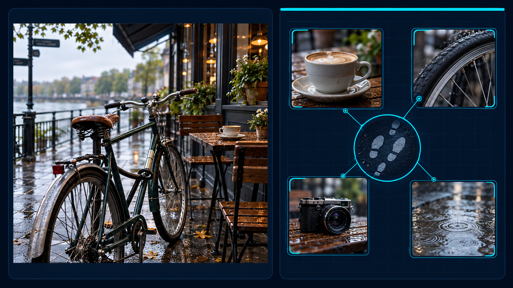

Коротке відео
Цифровий слід: що залишається в мережі.
Переглянути відеоУ мережі знайдено досьє користувача Alex_404. Розшифруйте фрагменти й з’ясуйте, хто залишив ці цифрові сліди.

Працюйте з даними на зображенні. Відповіді можна перевірити в чатботі.
Що потрібно з’ясувати:
Посилання можна додати в HTML перед завантаженням сторінки на GitHub.
Цифровий слід: що залишається в мережі.
Переглянути відеоПідказки до місії та перевірка відповідей.
Відкрити чатботПоділіться враженнями після розслідування.
Заповнити форму